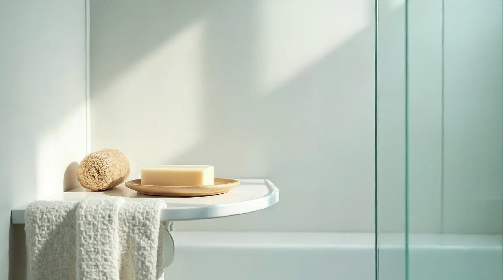
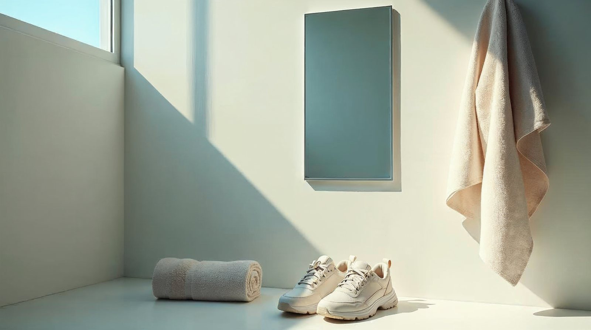
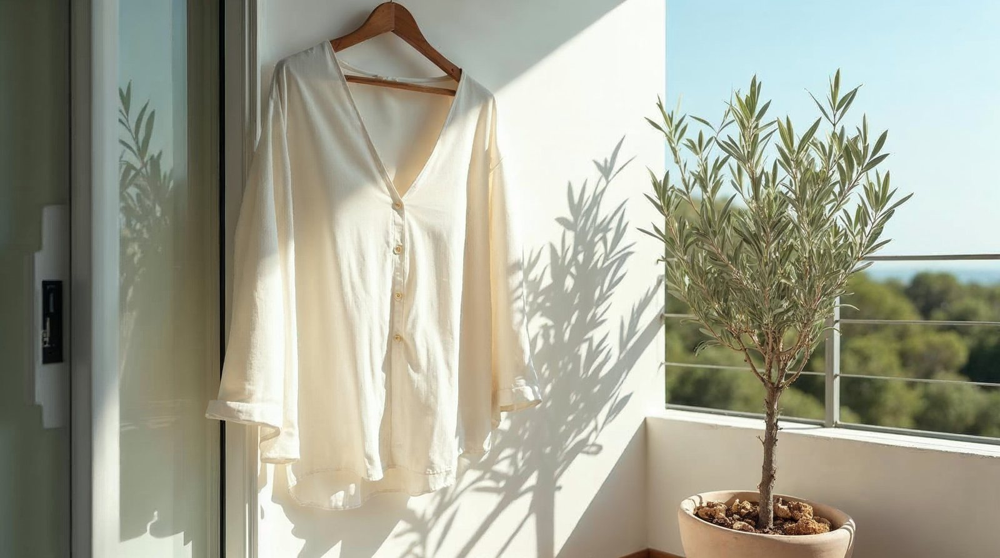
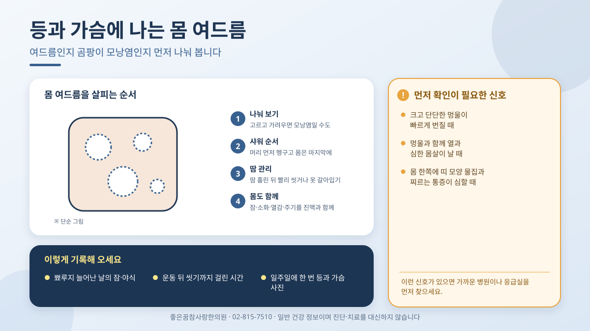

이종호 한의사 감수좋은꿈참사랑한의원 대표원장 (한의사 면허번호 19769)발행 2026-11-26 · 수정 2026-11-27
이 글의 차례
샤워를 마치고 거울 앞에서 몸을 돌려 보는 날이 있어요. 손이 잘 닿지 않는 등 한가운데와 어깨 뒤쪽에 붉은 뾰루지가 오돌토돌 퍼져 있고, 가슴 위쪽에도 몇 개가 새로 올라왔습니다. 여름에 등이 파인 옷을 입을 생각을 하니 벌써 마음이 무거워지시죠.
몸에 나는 여드름은 얼굴 여드름보다 남에게 덜 보이는 대신, 혼자 끙끙 앓기 쉬운 고민이에요. 손이 닿지 않아 관리하기도 어렵고, 가방끈이나 의자 등받이에 눌려 아프기도 하거든요. 속옷 끈이 지나가는 자리를 따라 줄지어 올라오는 분도 있어요.
진료실에서 다른 얘기를 하시다가 조심스럽게 "등에도 뭐가 많이 나요" 하고 말씀하시는 분이 적지 않아요. 그 말 꺼내기까지 얼마나 망설이셨을지 저는 알 것 같아요. 그래서 그 얘기가 나오면 반갑게 듣습니다.
그러니까 사실은 둘을 나눠서 보셔야 해요. 등과 가슴에 올라오는 뾰루지가 모두 여드름은 아니거든요. 피지와 모공이 막혀 생기는 여드름도 있지만, 땀과 피지를 좋아하는 곰팡이가 모낭에 염증을 일으키는 모낭염인 경우도 꽤 많아요. 겉으로는 비슷해 보여도 살피는 방법과 쓰는 약이 달라서, 먼저 나눠 보는 게 중요해요.
저는 몸 여드름 얘기가 나오면 피부만이 아니라 하루의 흐름을 함께 여쭤요. 땀을 흘린 뒤 얼마나 빨리 씻는지, 잠은 언제 드는지, 식사와 소화는 어떤지, 요즘 마음이 쫓기지는 않는지요. 그 대답 안에 뾰루지가 자꾸 올라오는 이유가 숨어 있는 경우가 많거든요.
몸 여드름은 어떤 상태인가요
등과 가슴, 어깨는 얼굴 다음으로 피지샘이 많은 곳입니다. 피지가 많이 나오는 데다 옷과 가방에 늘 덮여 있고, 땀이 차기 쉬워서 모공이 막히기 좋은 조건을 갖추고 있습니다. 막힌 모공에 세균이 자라며 염증이 생기면 붉은 뾰루지와 고름이 생깁니다.
몸 여드름은 모양이 여러 가지입니다. 하얗거나 검은 점처럼 보이는 막힌 모공, 붉게 솟은 뾰루지, 가운데 노란 고름이 잡힌 뾰루지, 피부 깊이 단단하게 만져지며 아픈 멍울까지 섞여 나타납니다. 깊은 멍울은 가라앉은 뒤에도 자국이 오래 남기 쉬워서 일찍 살피는 것이 좋습니다.
등 여드름은 손이 닿지 않아 자꾸 긁거나 짜게 되기 쉽습니다. 그러면 염증이 깊어지고 색소 자국이 남습니다. 특히 등과 가슴 가운데는 상처가 두껍게 솟아오르는 흉터가 생기기 쉬운 자리여서, 함부로 짜지 않는 것이 무엇보다 중요합니다.
왜 등과 가슴에 뾰루지가 자꾸 올라올까요
몸 여드름은 피부 안쪽의 조건과 바깥의 습관이 함께 만들어 냅니다. 아래 가운데 해당하는 것이 몇 개인지 세어 보시면 무엇부터 바꿀지가 보이기 시작합니다.
- 운동이나 출퇴근으로 땀을 흘린 뒤 젖은 옷을 오래 입고 있는 경우
- 샤워할 때 린스나 컨디셔너를 마지막에 헹궈 등에 남는 경우
- 꽉 끼는 합성 소재 옷이나 백팩 끈이 같은 자리를 계속 누르는 경우
- 잠이 모자라고 늦게 잠드는 날이 이어지는 경우
- 단 음료, 기름진 야식, 술이 잦은 경우
- 생리 전이나 긴장이 큰 시기마다 함께 올라오는 경우
샤워 순서는 생각보다 많은 분이 놓치는 부분입니다. 머리를 감고 린스를 헹구면 그 물이 등을 타고 흘러내리는데, 린스 성분이 등 피부에 남아 모공을 막을 수 있습니다. 머리를 먼저 감고 헹군 뒤 몸을 마지막에 씻는 순서로 바꾸는 것만으로도 차이를 느끼는 분이 계십니다.
몸의 상태도 크게 영향을 줍니다. 잠이 부족하고 마음이 쫓기는 시기에는 피지가 늘고 피부의 회복이 느려집니다. 단 음식과 기름진 야식이 이어지면 몸에 열감이 쌓이고 피부가 번들거리는 분도 있습니다. 그래서 진료실에서는 뾰루지가 심해진 시기와 생활의 변화를 나란히 놓고 봅니다.

여드름과 곰팡이 모낭염은 어떻게 다를까요
몸에 나는 뾰루지 가운데 꽤 많은 수가 곰팡이로 생기는 모낭염입니다. 우리 피부에 원래 사는 효모균이 땀과 피지가 많은 환경에서 지나치게 늘어나 모낭에 염증을 일으키는 것입니다. 여드름처럼 보이지만 여드름 약으로는 잘 가라앉지 않는다는 점이 다릅니다.
곰팡이 모낭염은 비슷한 크기의 작은 붉은 뾰루지가 고르게 퍼져 있고, 가려운 경우가 많습니다. 땀을 많이 흘리는 여름이나 운동을 시작한 뒤에 갑자기 늘어나는 일이 흔하고, 막힌 모공의 하얀 점이나 검은 점은 잘 보이지 않습니다.
여드름은 크기가 들쭉날쭉하고, 막힌 모공과 붉은 뾰루지, 고름, 멍울이 섞여 있으며, 가렵기보다 아픈 편입니다. 두 가지가 함께 있는 분도 있어서, 겉모습만으로 구분하기 어려울 때는 피부과에서 확인하시는 것이 정확합니다.
이 밖에도 땀이 차는 곳에 생기는 땀띠, 겨드랑이와 사타구니에 같은 자리 종기가 되풀이되는 화농성 한선염, 팔 뒤쪽이 닭살처럼 오돌토돌한 모공각화증도 몸 여드름과 헷갈리기 쉽습니다. 자리와 모양, 가려움 여부를 함께 보면 구분에 도움이 됩니다.

운동하는 분이라면 이렇게 살펴보세요
헬스나 달리기, 클라이밍처럼 땀을 많이 흘리는 운동을 즐기시는 분들에게 몸 여드름이 흔합니다. 운동 자체는 몸에 좋은 일이니 줄일 필요는 없고, 운동 전후의 습관을 조금 바꾸는 것이 중요합니다.
운동복은 땀을 빨리 말려 주는 소재로 고르고, 운동이 끝나면 되도록 빨리 샤워하세요. 바로 씻기 어렵다면 젖은 옷이라도 먼저 갈아입는 것이 좋습니다. 헬스장 기구의 등받이나 매트에 맨살이 닿는다면 수건을 깔고 쓰시길 권합니다.
근육을 키우기 위해 단백질 보충제를 드시는 분 가운데 보충제를 먹기 시작한 뒤 뾰루지가 늘었다고 말씀하시는 분이 있습니다. 모든 분에게 그런 것은 아니지만, 시기가 겹친다면 기록해 두셨다가 진료실에서 함께 살펴보면 좋습니다.
남은 자국은 어떻게 살필까요
뾰루지가 가라앉은 자리에 붉은 기운이나 거뭇한 색이 남는 경우가 많습니다. 붉은 자국은 염증이 지나간 뒤 혈관이 아직 늘어나 있는 상태이고, 거뭇한 자국은 염증 뒤에 색소가 남은 상태입니다. 둘 다 몇 달에 걸쳐 서서히 옅어지는 경우가 많습니다.
자국이 옅어지는 동안에는 그 자리를 긁거나 문지르지 않고, 햇볕에 오래 드러내지 않는 것이 도움이 됩니다. 등이 파인 옷을 입고 바깥에 오래 계신다면 자외선 차단제를 가볍게 발라 주세요. 새로운 뾰루지가 덜 올라오게 하는 것이 자국을 줄이는 첫걸음입니다.
피부가 움푹 패거나 두껍게 솟아오른 흉터는 저절로 옅어지기 어려운 경우가 있습니다. 이런 흉터가 신경 쓰이신다면 피부과에서 상의해 보시길 권합니다. 무엇보다 지금 올라오는 뾰루지를 짜지 않는 것이 새 흉터를 줄이는 첫 번째 길입니다.
먼저 이렇게 여쭙니다
처음 오시면 저는 대략 이런 순서로 여쭙니다. 미리 생각해 오시면 진료 시간을 더 알차게 쓰실 수 있습니다.
- 언제부터 올라왔고, 어떤 계절이나 시기에 더 심해지나요?
- 가려운가요, 아픈가요? 짜거나 긁는 일이 잦나요?
- 얼굴에도 여드름이 있나요, 몸에만 있나요?
- 운동을 하시나요? 땀을 흘린 뒤 언제 씻으시나요?
- 잠드는 시각과 깨는 시각, 식사와 야식은 어떤가요?
- 드시는 약이나 영양제, 바르는 약이 있나요?
피부과에서 받은 약이 있다면 그대로 가져와 주세요. 바르는 약과 먹는 약의 종류에 따라 지금 피부의 모습이 달라지기도 하고, 한의원 진료 방향을 정할 때도 꼭 필요한 정보입니다.
일상에서 먼저 해 볼 수 있는 것
몸 여드름은 생활 습관에 따라 크게 출렁입니다. 한꺼번에 여러 가지를 바꾸려 하기보다, 아래 가운데 가장 쉬워 보이는 것 하나부터 골라 보세요.
- 샤워할 때 머리를 먼저 감고 헹군 뒤 몸을 마지막에 씻기
- 땀을 흘린 뒤에는 되도록 빨리 씻거나 젖은 옷부터 갈아입기
- 면이나 통기성 좋은 소재의 헐렁한 옷 입기
- 베갯잇과 이불 커버는 자주 빨아 쓰기
- 등을 긁거나 뾰루지를 손으로 짜지 않기
- 잠드는 시각을 일정하게 맞추고, 늦은 밤 야식 줄이기
몸을 씻을 때 때수건으로 세게 밀거나 거친 솔로 문지르면 피부가 자극을 받아 염증이 더 번질 수 있습니다. 순한 세정제를 손이나 부드러운 수건에 묻혀 거품을 내 씻고, 미지근한 물로 충분히 헹구는 것이 좋습니다. 씻은 뒤에는 가볍게 두드려 말려 주세요.
등 가운데처럼 손이 닿지 않는 곳은 긴 손잡이가 달린 부드러운 샤워 타월을 쓰시면 세게 문지르지 않고도 고르게 씻을 수 있습니다. 샤워 타월도 쓰고 나서 잘 말려 두어야 곰팡이와 세균이 자라지 않습니다. 젖은 채로 욕실에 걸어 두기보다 바람이 통하는 곳에 널어 주세요.
보습제나 자외선 차단제를 몸에 바르신다면, 무겁고 기름진 제품보다 가벼운 제품을 고르시길 권합니다. 향수나 바디 오일을 등과 가슴에 자주 바르는 분은 잠시 쉬어 보시고 변화를 살펴보셔도 좋습니다. 머리카락이 긴 분은 잘 때 머리를 묶어 두면 등과 목에 닿는 피지가 줄어듭니다.
식사는 특정 음식을 모두 끊기보다 흐름을 보시는 것이 좋습니다. 단 음료와 과자, 기름진 야식이 이어진 주에 뾰루지가 늘어난다면 그 연결을 기록해 두세요. 우유나 유제품이 걸린다고 느끼는 분도 있어서, 의심되는 음식을 2주 정도 줄여 보고 변화를 비교해 보는 방법도 있습니다.
한의원에서 함께 살필 수 있는 경우
뾰루지 자체를 다스리는 약은 피부과 진료가 함께 가는 경우가 많습니다. 한의원에서는 그와 나란히, 뾰루지가 자꾸 올라오는 몸의 바탕을 함께 살핍니다.
- 몸에 열이 많고 땀이 많으며 얼굴과 등이 쉽게 번들거리는 경우
- 잠이 늦고 피로가 쌓이는 시기마다 뾰루지가 함께 늘어나는 경우
- 변비나 묽은 변, 더부룩함처럼 소화가 불편할 때 피부도 함께 거칠어지는 경우
- 생리 전마다 등과 턱에 뾰루지가 되풀이되는 경우
- 마음이 쫓기거나 긴장이 큰 시기에 피부가 함께 예민해지는 경우
좋은꿈참사랑한의원에 오시면 모든 분의 맥을 먼저 짚고, 아래 '먼저 확인이 필요한' 신호가 없는지도 함께 봅니다. 그다음 땀과 열감, 잠과 소화, 대소변, 생리 주기를 차례로 여쭙습니다. 뾰루지는 직접 보며 여드름과 모낭염 가운데 어느 쪽에 가까운지 함께 살핍니다.
진찰한 내용을 바탕으로 생활에서 바꿔 볼 것 하나와 함께 침, 한약 상담 가운데 지금 상태에 맞는 것을 정합니다. 한약을 상의할 때는 드시는 약을 모두 확인하고 신중하게 정합니다. 피부과에서 처방받은 약은 상의 없이 멈추지 않으시도록 안내합니다.
임신 중이시거나 임신을 준비 중이라면 먼저 알려 주세요. 여드름에 쓰는 약 가운데에는 임신 중에 피해야 하는 것이 있어서, 산부인과와 피부과 선생님과 상의해서 정하는 것이 순서입니다.
이렇게 기록해 오시면 상담이 쉬워집니다
몸 여드름은 날마다 조금씩 달라서, 집에서 쌓은 기록이 큰 단서가 됩니다. 2~4주 정도만 간단히 적어 보세요.
- 뾰루지가 늘어난 날과 그 전날의 잠, 식사, 야식
- 운동한 날과 운동 뒤 씻기까지 걸린 시간
- 생리 시작일과 뾰루지가 늘어난 시기
- 가려움이 심했던 날과 아팠던 날
- 일주일에 한 번, 같은 자리와 같은 밝기에서 찍은 등과 가슴 사진
등 사진은 혼자 찍기 어려우니 가족에게 부탁하시거나, 거울을 등지고 휴대폰 타이머로 찍으셔도 됩니다. 같은 자세로 찍어 두면 변화의 흐름을 비교하기 쉽습니다. 기록이 빠진 날이 있어도 괜찮습니다. 생각날 때 한 줄씩 적어 두시면 몇 주 뒤에는 뾰루지와 생활 사이의 연결이 조금씩 보이기 시작합니다.

자신 있게 등을 펴기 위해
자신 있게 등을 펴기 위해
몸 여드름은 남에게 잘 말하지 못해 혼자 오래 고민하게 되는 경우가 많아요. 원래 그래요. 등은 내 눈에 잘 안 보이고, 남에게 보여 주기도 쑥스러운 자리니까요. 그래도 원인을 나눠 보고 생활을 조금씩 바꾸면, 뾰루지가 올라오는 흐름이 달라지는 걸 느끼시는 분들이 많아요.
몸의 열과 땀, 잠의 흐름을 살피는 건 제가 맡을게요. 대신 하나만 부탁드려요. 샤워 순서를 바꿔 몸을 마지막에 씻어 주세요. 머리를 헹군 샴푸와 린스가 등에 남지 않게요. 딴 건 하시던 대로 편하게 하셔도 돼요.
다음에 오시면 그 일주일 동안의 사진과 기록부터 함께 펼쳐 봐요. 궁금한 건 그때 편하게 물어보세요.
이런 증상은 먼저 확인이 필요합니다
- 등이나 가슴에 크고 단단한 멍울이 빠르게 번지며 열과 함께 심한 몸살이 나는 경우
- 몸 한쪽에 물집이 띠 모양으로 모여 생기고 찌르는 듯한 통증이 심한 경우
이런 신호가 있으면 한의원보다 가까운 병원이나 응급실을 먼저 찾으세요.
함께 읽으면 좋은 글
- 어른이 되어 턱과 볼에 붉고 아픈 여드름이 되풀이되는 성인 여드름은 어떻게 살피나요?
- 얼굴에 여드름이 자꾸 반복될 때는 잠·식사·주기 중 무엇부터 살피나요?
- 사춘기가 되며 이마와 코에 여드름이 번질 때, 청소년 여드름은 어떻게 살피나요?
- 땀이 차는 목·등·접히는 곳에 붉은 좁쌀 같은 것이 돋고 따끔거리는 땀띠는 어떻게 살피나요?
- 두피에 뾰루지와 여드름이 자꾸 올라올 때는 무엇을 나눠 살피고, 생활에서는 어떻게 하나요?

여쭙는 것
- 언제부터 올라왔고, 어떤 계절이나 시기에 더 심해지나요?
- 가려운가요, 아픈가요? 짜거나 긁는 일이 잦나요?
- 얼굴에도 여드름이 있나요, 몸에만 있나요?
생활에서 해 볼 것
- 샤워할 때 머리를 먼저 감고 헹군 뒤 몸을 마지막에 씻기
- 땀을 흘린 뒤에는 되도록 빨리 씻거나 젖은 옷부터 갈아입기
- 면이나 통기성 좋은 소재의 헐렁한 옷 입기
한의원에서 함께 살필 것
- 몸에 열이 많고 땀이 많으며 얼굴과 등이 쉽게 번들거리는 경우
- 잠이 늦고 피로가 쌓이는 시기마다 뾰루지가 함께 늘어나는 경우
- 변비나 묽은 변, 더부룩함처럼 소화가 불편할 때 피부도 함께 거칠어지는 경우
먼저 확인이 필요한 신호
- 등이나 가슴에 크고 단단한 멍울이 빠르게 번지며 열과 함께 심한 몸살이 나는 경우
- 몸 한쪽에 물집이 띠 모양으로 모여 생기고 찌르는 듯한 통증이 심한 경우
한눈에 보는 표
| 구분 | 핵심 |
|---|---|
| 여쭙는 것 | 언제부터 올라왔고, 어떤 계절이나 시기에 더 심해지나요? 가려운가요, 아픈가요? 짜거나 긁는 일이 잦나요? |
| 생활에서 해 볼 것 | 샤워할 때 머리를 먼저 감고 헹군 뒤 몸을 마지막에 씻기 땀을 흘린 뒤에는 되도록 빨리 씻거나 젖은 옷부터 갈아입기 |
| 한의원에서 함께 살필 것 | 몸에 열이 많고 땀이 많으며 얼굴과 등이 쉽게 번들거리는 경우 잠이 늦고 피로가 쌓이는 시기마다 뾰루지가 함께 늘어나는 경우 |
| 먼저 확인이 필요한 신호 | 등이나 가슴에 크고 단단한 멍울이 빠르게 번지며 열과 함께 심한 몸살이 나는 경우 몸 한쪽에 물집이 띠 모양으로 모여 생기고 찌르는 듯한 통증이 심한 경우 |
자주 묻는 질문
등 여드름은 짜도 되나요?
손으로 짜면 염증이 깊어지고, 등과 가슴은 두껍게 솟는 흉터가 생기기 쉬운 자리라 권하지 않습니다. 고름이 크게 잡혔다면 피부과에서 처치를 받으시는 것이 좋습니다.
가려운 뾰루지도 여드름인가요?
비슷한 크기의 작은 뾰루지가 고르게 퍼져 있고 가렵다면 곰팡이로 생기는 모낭염일 수도 있습니다. 약이 달라서 피부과에서 확인해 보시길 권합니다.
몸 여드름은 한의원에서 치료하나요?
뾰루지를 다스리는 약은 피부과 진료와 함께 가는 경우가 많습니다. 한의원에서는 땀과 열감, 잠과 소화, 생리 주기처럼 뾰루지가 되풀이되는 몸의 바탕을 함께 살핍니다.
운동을 쉬어야 하나요?
운동은 이어 가셔도 됩니다. 땀을 흘린 뒤 빨리 씻거나 젖은 옷을 갈아입고, 기구에 맨살이 닿지 않게 수건을 까는 습관을 함께 들여 보세요.
피부과 약과 한약을 함께 먹어도 되나요?
드시는 약을 모두 확인하고 신중하게 정합니다. 약 봉투나 처방전 사진을 가져와 주시면 함께 살펴보고, 필요하면 처방한 선생님과 상의하시도록 안내합니다.
좋은꿈참사랑한의원은 재진 때 지난번 이야기부터 이어서 여쭙니다. 진료시간과 예약은 오시는 길에서 확인하세요.
어디서 상담받을 수 있나요?
좋은꿈참사랑한의원은 서울 동작구 만양로2길 2 신성빌딩 3층·5층(서울 동작구 상도동, 7호선 상도역 3번 출구 근처)에 있습니다. 한의사 3명(이종호 대표원장, 조영기 수석진료원장, 정원영 진료원장)이 진료합니다. 진료시간은 평일 09:30~20:00(점심 13:00~14:00), 토·일·공휴일 09:30~15:00이며, 방문 전 전화로 확인을 권합니다. 예약은 네이버 예약, 카카오톡 상담, 전화 02-815-7510로 받습니다.
이 글은 일반적인 건강 정보이며 개인의 진단이나 치료를 대신하지 않습니다. 증상이 있거나 복용 중인 약이 있다면 진료를 통해 확인하세요. 치료 효과는 개인마다 다를 수 있습니다.
작성 기준: 일반적으로 알려져 있는 건강 정보를 참고해 정리했습니다(대표원장 감수). 증상 기록은 1~2주 동안 하루 1회, 비슷한 시간에 적어 오시면 지난 상태와 비교하기 쉽습니다.